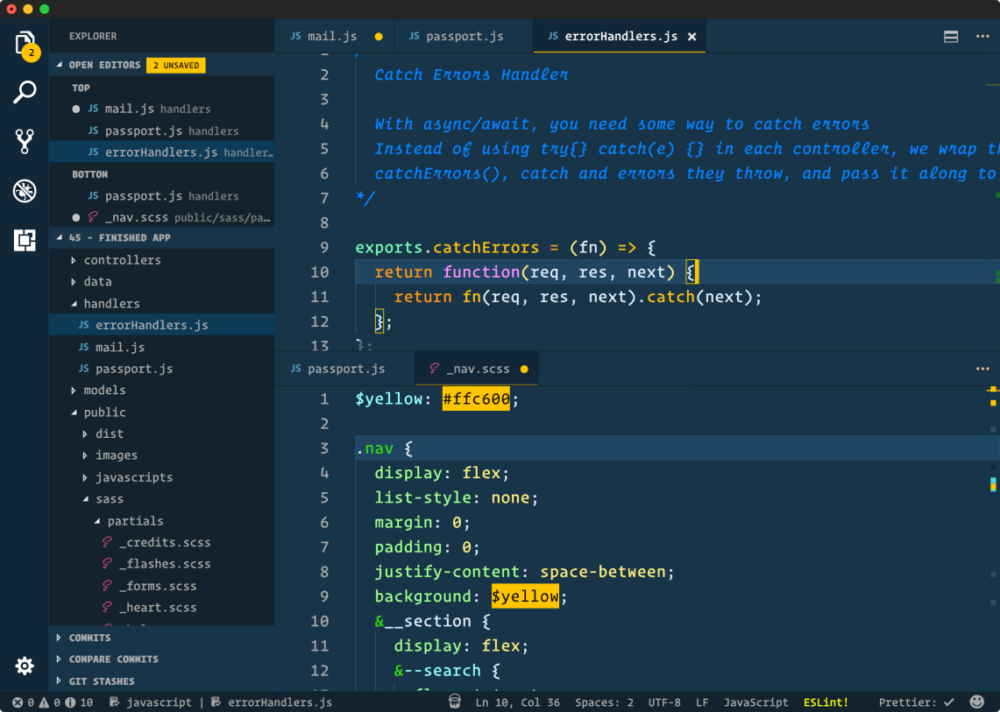
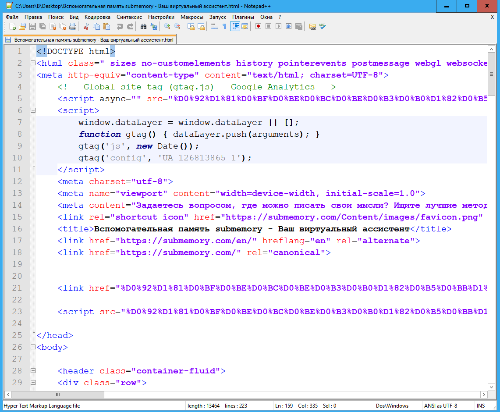
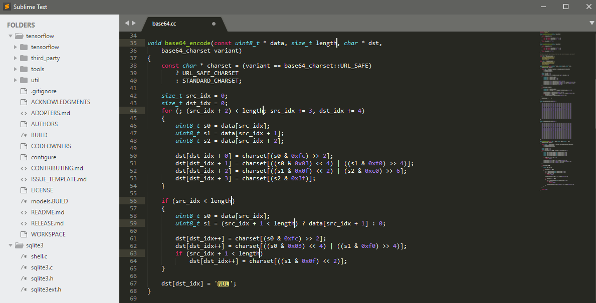
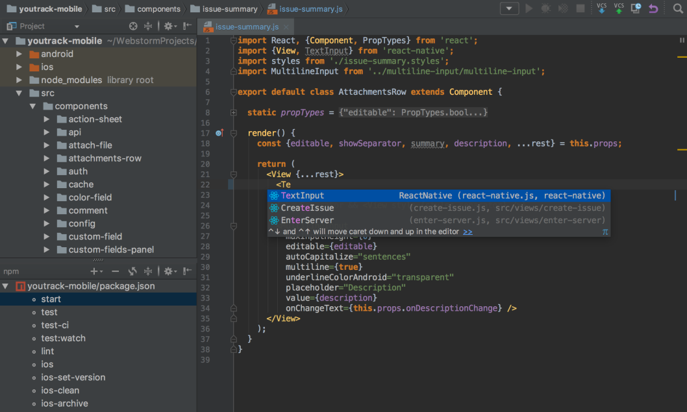
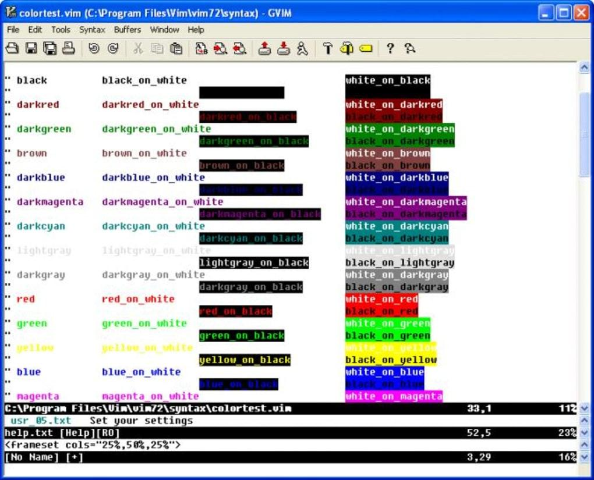

Топ-5 редакторов кода
Date
Что такое редактор HTML? Если упростить ответ на заявленный вопрос – редактор HTML это программа-инструмент, используемая для написания основы веб-сайтов. И, несмотря на то, что практически любой текстовый редактор может использоваться для создания сайтов, это вовсе не означает, что вам лучше использовать обычный текстовый редактор вместо специально созданного инструмента разработчика. Современные HTML редакторы имеют в себе множество встроенных механизмов, существенно упрощающих работу с сайтами. Выделение специальных синтаксических конструкций, проверка ошибок, подсказка и вставка часто используемых элементов кода HTML, механизмы автозаполнения – эти и многие другие механизмы современных HTML редакторов каждый день облегчают работу программистов, верстальщиков и дизайнеров. Однако, редактор HTML это вовсе не одна программа – это группа программ, каждая из которых обладает своим функционалом, имеет свои особенности использования, свой набор плюсов и минусов. Задача такого инструмента как HTML редактор – уменьшить затраченные вами усилия на то, чтобы ваш код оставался функциональным и чистым. Какие же бывают HTML редакторы? Классифицируя их по функциональному назначению и по возможностям выделяют: WYSIWYG редакторы и текстовые редакторы HTML.
Visual studio Code Плюсы Visual Studio Code
Имеет значительную часть функционала IDE. Встроенный мощный механизм автозаполнения – IntelliSense. Значительное количество расширений и дополнений. Интегрирован с Git «из коробки». Имеется встроенный отладчик для кода JavaScript, TypeScript, Node.js Открытый исходный код приложения. Visual Studio Code распространяется бесплатно. Минусы Visual Studio Code Из минусов разработчики отмечают достаточно большое время запуска приложения. Поиск по проектам осуществляется относительно медленно. Notepad++
Notepad++ - это легковесный текстовый редактор, разработанный для компьютеров под управлением Windows. Пользователи Linux также могут использовать его через Wine. Notepad ++, выпущенный еще в 2003 году, является проверенным и устоявшимся инструментом многих разработчиков, являясь удобным текстовым редактором для HTML кода. Этот редактор распространяется как бесплатное программное обеспечение и его репозиторий доступен в GitHub. Notepad++ поддерживает сторонние плагины. Основные достоинства Notepad++ Notepad ++ является простым, не требовательным к ресурсам инструментом. Есть портативная версия. Функционал программы легко расширяется множеством плагинов. При желании такой плагин можно создать самому. Интерфейс программы также легко настраивается. Поддерживается работа с большим количеством вкладок одновременно. Notepad ++ является на 100% бесплатной программой. Недостатки Notepad++ Подавляющее большинство пользователей этого текстового редактора HTML кода не находят в нем недостатков. Однако можно отметить некоторую минималистичность интерфейса, которая не подходит ряду пользователей. Также можно отметить, что этот редактор не является IDE и не несет в себе ее дополнительный функционал. По этой причине многим пользователям приходится использовать некую среду разработки в дополнение к редактору Notepad ++.
Sublime Text
Еще одним примером отличного текстового редактора для HTML является Sublime. Эта программа поставляется в бесплатном виде с некоторыми ограничениями. Иными словами - вы можете использовать Sublime бесплатно, но вам придется купить лицензию, если вы захотите пользоваться всеми функциями этого редактора. Sublime предлагает отличную поддержку, обеспечивая постоянный выход актуальных обновлений. Пользователи могут добавлять плагины, созданные сообществом, или создавать свои собственные. Для значительной части разработчиков использование бесплатной версии Sublime будет вполне достаточным. Если же вам понадобится больше возможностей, вы сможете купить лицензию позже. Плюсы Sublime Кроссплатформенность. Sublime работает в таких операционных системах как Windows, OS X и Linux. Sublime является легковесным инструментом, не загружающим систему. Есть портативная версия. Sublime предоставляет тысячи различных дополнений с открытым исходным кодом, которые созданы большим и активным сообществом. Раздельное редактирование. Разработчики могут использовать несколько мониторов и редактировать различные участки кода одновременно. Недостатки Sublime Не весь функционал доступен пользователю бесплатно. Рядом пользователей отмечается неудобство работы с менеджером плагинов. Ряд плагинов сторонних разработчиков может работать некорректно.
WebStorm на базе IntelliJ
WebStorm – весьма удобная для web разработки среда разработки. WebStorm была разработана компанией JetBrains на основе другого их продукта – IDE IntelliJ. Плюсы WebStorm Удобное автодополнение как кода на HTML, CSS, так и на JavaScript. Проверка на наличие ошибок и удобная отладка кода обеспечивается с помощью интеграции с рядом систем отслеживания ошибок. Встроенная интеграция с таким системами управления версиями как GitHub, Git, а также Subversion, Perforce и Mercurial. Гибкость настроек. Достаточно большое количество плагинов. Недостатки WebStorm Свойственная всем IDE медлительность в работе и требовательность к ресурсам. Относительно сложные настройки. Платная IDE, распространяемая по подписке.
Vim
Vim (сокращение от - Vi Improved ) это мощный портативный текстовый редактор с очень богатой историей – ему уже более 27 лет. Обладает богатым функционалом, с возможностью глубокой настройки программы под себя. В оригинальном виде работает в окне консоли. Можно использовать версию с графическим оконным интерфейсом – Gvim. Стоит отметить, что многие современные IDE, для улучшения процесса разработки, содержат в себе эмулятор функциональности Vim. Плюсы использования Vim Полноценная работа во множестве операционных систем – Windows, Linux, Amiga, Mac OS X, Unix, OpenVMS, OS/2. Глубокая настройка работы редактора под себя. Очень низкие требования к кресурсам. И, соответственно - высокая скорость работы. Возможность редактирования или просмотра файла на удаленном сервере через терминал Более 14000 доступных пакетов расширений. Недостатки Vim Один из самых сложных для изучения инструментов разработки. Высокий порог вхождения требует от пользователя значительных затрат времени на запоминание его особенностей, команд, плагинов и тд.
| Название Редактора | VS Code | Notepad++ | Sublime Text | WebStorm | Vim |
|---|---|---|---|---|---|
| Место в топе | 1 | 3 | 2 | 4 | 5 |
| Дизайн | 4 | 5 | 3 | 5 | 2 |
| Стоимость | 250$/m | 0 | 0 | 159$ | 0 |
| Удобство | 5 | 3 | 4 | 2 | 1 |
| Интерфейс | 5 | 3 | 4 | 1 | 2 |
| Простота | 5 | 3 | 4 | 5 | 2 |
| Функционал | 5 | 3 | 4 | 5 | 2 |